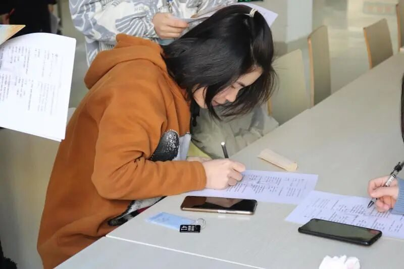
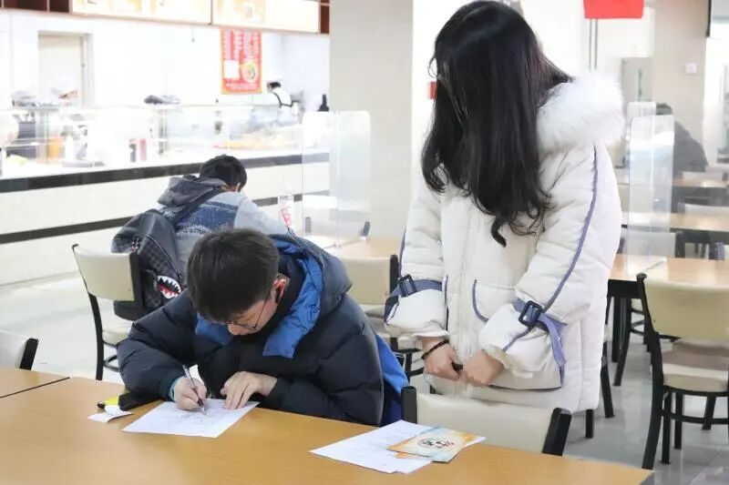
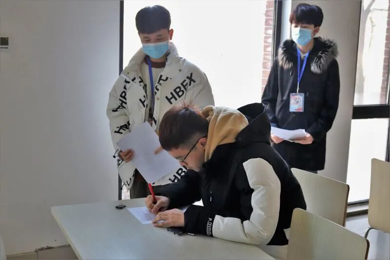
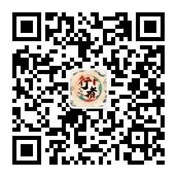

【行者无疆 聆谂丝韵】校园采访活动总结
行者无疆 聆谂丝韵

校园采访及问卷调查活动总结
寒辞冬雪去
暖携春风来
冰凌犹高挂
行者步开怀
校园问卷调查篇
一纸行文一瘦笔
一城风韵一个你
莫高千窟列鸣沙，崖壁纷披五色霞。敦煌文化的瑰丽多彩不禁令行者向往，同时也激起一窥同学们心中的敦煌文化的好奇，一份调查问卷在行者精心的制作中破壳。行者们分散校园各处，诚邀同学填写问卷。“你知道敦煌这座城市吗？你了解哪些敦煌当地的景点呢？”想必让同学们眉头舒展，在眼底深处倒映着诸如“角声吹彻梅花，胡云遥接秦霞”般的美好想象。



同学们深思熟虑，诚意满满的回答让行者感动。时间悄悄地溜走，调查很快就结束了。而同学们心中的“敦煌文化”，也已清晰展现于行者面前。
校园采访篇
一问一答一憧憬
一光一影一旅程
熙来攘往的美食广场里，行者持着话筒，与受访同学展开了一段段心灵与文化的碰撞。
交谈由“敦煌”的印象提及今日敦煌文化的影响，万里戎机，关山若飞。朔气金柝，寒光铁衣。敦煌，镌刻着戍边将士的峥嵘岁月和家国情怀。在采访之中，那薛逢看惯金戈铁马，刘禹锡念此快意人生的敦煌，竟在话语中舒展开来，显现在行者的眼见。
▶
“敦，大也；煌，盛也”。雪融清流，宛如玉带。戈壁诉说着绿洲峥嵘，细流记录着大漠苍桑。
敦煌石窟，文书耀世。造像铭记了虔诚信念，经卷见证了学问流长。
行者于世，即是无界的拓宽者。凛冬已至，行者们即将奔赴，奔赴这美誉“暮光之城”的唐之沙州，汉之敦煌。一览它的雄浑与瑰丽。
来源 | 行者无疆实践团
视频 | 蔡天禹
文字 | 张南云
排版 | 张清雅
审核 | 康艳虎 张清雅 胡至鸿
行者无疆实践团
QQ：2758025831

随行者一起认识世界
长按二维码